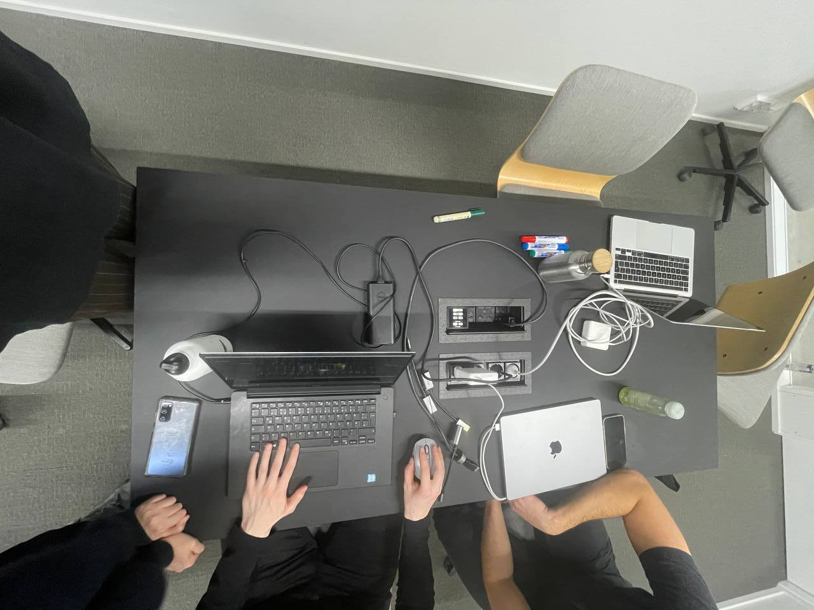

Gesture Assignment (first meeting)
In this first discussion, we came up with many different and interesting
gestures, from the hand to the whole body. Some of the gestures were
given a certain social meaning, and they were often applied to person-to-
person, person-to-social services, and some gestural habits developed by
existing technologies.
But other gestures with more potential are less socially relevant. For example, cupping ear to hear more sounds, or putting the hand to the forehead to block the sun, are gestures that respond to the environment.
And we come up with some new devices and occasion to apply these gestures which only react to environment, natural substances (sound, wind, sunlight, water…). For example, creating an immersive space to interpret natural scenes, amplifying the volume when detect people try to get close with ear.
But other gestures with more potential are less socially relevant. For example, cupping ear to hear more sounds, or putting the hand to the forehead to block the sun, are gestures that respond to the environment.
And we come up with some new devices and occasion to apply these gestures which only react to environment, natural substances (sound, wind, sunlight, water…). For example, creating an immersive space to interpret natural scenes, amplifying the volume when detect people try to get close with ear.
Gesture Assignment (second meeting & Presentation)
In the second meeting we decided to focus on the cupping ear gesture.
And for the context of using, we thought we should respect the feature
of the gesture ---- react to the environment, which can also be said as
reacting to nature.
We abandoned the one-way directive interaction from human to object and instead created a process --- an object affects people, stimulates gesture response from the people, and eventually achieve to change the object.
For object, it should be an audio device in order to fit the logic of the gesture. At first we decided to show a speaker under the spotlight, but considering that people would touch it and do something unexpected, we considered adding a fence in front of the speaker... At this point, it naturally occurred to us that we needed a contextual story to make the overall process more vivid and meaningful.
So we came up with an animal-related scenario. When people stand outside the fence see a caged animal (object) struggling and opening its mouth to scream something; Then people may come closer and cup ear to hear more, and the those sound becomes clear. We thought that this gesture could also be used to make the image clearer, so we set up a screen behind the cage which can show how free the animal is in nature. We discussed a lot about the rationality of people's motivations for this, making each process more natural,what props to use and a determined a clear division of labour for the presentation.
We were assigned individual tasks and completed the final presentation.
At the beginning of the discussion, I thought there was more expansion in the natural environment of this gesture. But after watching the other groups perform it, I understood that we got limitations. Because there is also a human-design gap in interaction and technology in modern society, there are still many modes of living together between human and AI for us to explore.
We abandoned the one-way directive interaction from human to object and instead created a process --- an object affects people, stimulates gesture response from the people, and eventually achieve to change the object.
For object, it should be an audio device in order to fit the logic of the gesture. At first we decided to show a speaker under the spotlight, but considering that people would touch it and do something unexpected, we considered adding a fence in front of the speaker... At this point, it naturally occurred to us that we needed a contextual story to make the overall process more vivid and meaningful.
So we came up with an animal-related scenario. When people stand outside the fence see a caged animal (object) struggling and opening its mouth to scream something; Then people may come closer and cup ear to hear more, and the those sound becomes clear. We thought that this gesture could also be used to make the image clearer, so we set up a screen behind the cage which can show how free the animal is in nature. We discussed a lot about the rationality of people's motivations for this, making each process more natural,what props to use and a determined a clear division of labour for the presentation.
We were assigned individual tasks and completed the final presentation.
At the beginning of the discussion, I thought there was more expansion in the natural environment of this gesture. But after watching the other groups perform it, I understood that we got limitations. Because there is also a human-design gap in interaction and technology in modern society, there are still many modes of living together between human and AI for us to explore.
Project Proposal
